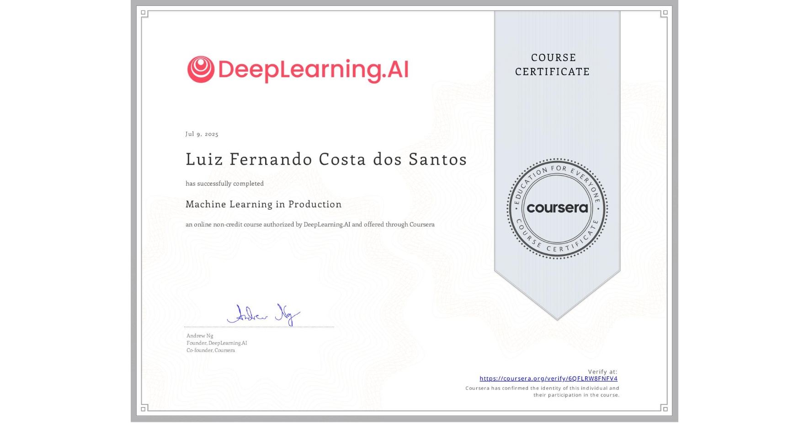

Machine Learning in Production
DeepLearning.AI • Coursera
Advanced specialization focused on deploying, monitoring, and maintaining machine learning systems in production environments.
Key Skills: MLOps, Model Deployment, Production Monitoring, TensorFlow Extended